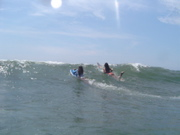

Fotos de Surf (Aquáticas)
Praia de Matinhos, 5 de Fevereiro de 2006
Fotógrafo: Aurelio Marinho Jargas
|
S034 Márcia, Nani, Cris |

S035 Cris, Nani |
S037 Cris |
S039 Nissin |

S042 Nissin |

S043 Cris |
S045 Nani |
S047 Nissin |
|
S056 Cris |

S059 Nissin |
Dica: Clique na foto para vê-la maior.